vignettes/a2_map_sf_examples.Rmd
a2_map_sf_examples.RmdSpatial data can include simple features (e.g. points, lines or polygons) or arrays (e.g. raster). This article will provide examples of how to create maps of sf (simple feature) objects using the simplevis package. Example sf objects for learning are provided: example_sf_point and example_sf_polygon. The simplevis sf functions can plot a sf object with any CRS, but the CRS must be specified. An error will come up in your console if you try to plot an sf object that does not have a CRS specified. The simplevis sf functions are wrappers for the ggplot2 and leaflet packages and therefore produce output of these. They work in similar ways.
The location of features can be plotted using ggplot_sf.
ggplot_sf(example_sf_point)
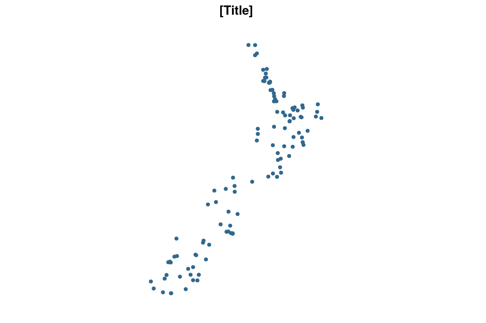
For the ggplot2 wrapper function, a boundary (e.g. administrative or coastline) can be added by adding an sf object to the boundary argument. A nz (and nz_region) sf object are provided to illustrate this.
ggplot_sf(example_sf_point, boundary = nz)
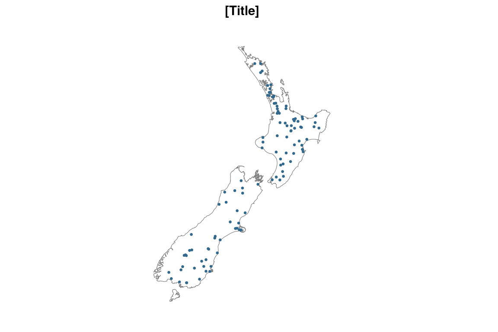
You can add a title through the title argument.
ggplot_sf(example_sf_point, boundary = nz, title = "An informative title, 2021")
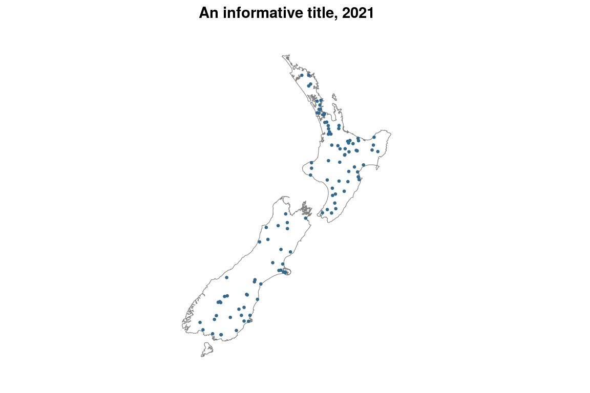
You can colour variables using the ggplot_sf_col function.
pal <- c("#0D94A3", "#C4C4C7", "#AE4E51") ggplot_sf_col(example_sf_point, col_var = trend_category, pal = pal, boundary = nz)
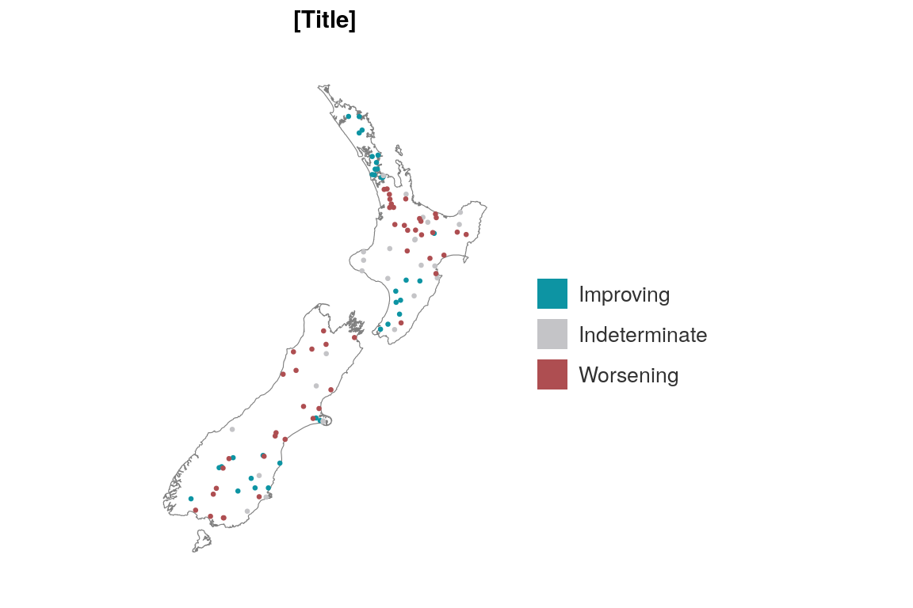
For numeric variables, you have the option of colouring using a method of quantile or bin, and defaulting to quantile.
The quantile method defaults to quartiles cut using the quantile algorithm. But you can customise it by providing a vector to the col_cuts argument from 0 to 1.
ggplot_sf_col(example_sf_point, median, col_method = "quantile", col_cuts = c(0, 0.25, 0.5, 0.75, 0.9, 1), col_labels_dp = 2, boundary = nz)
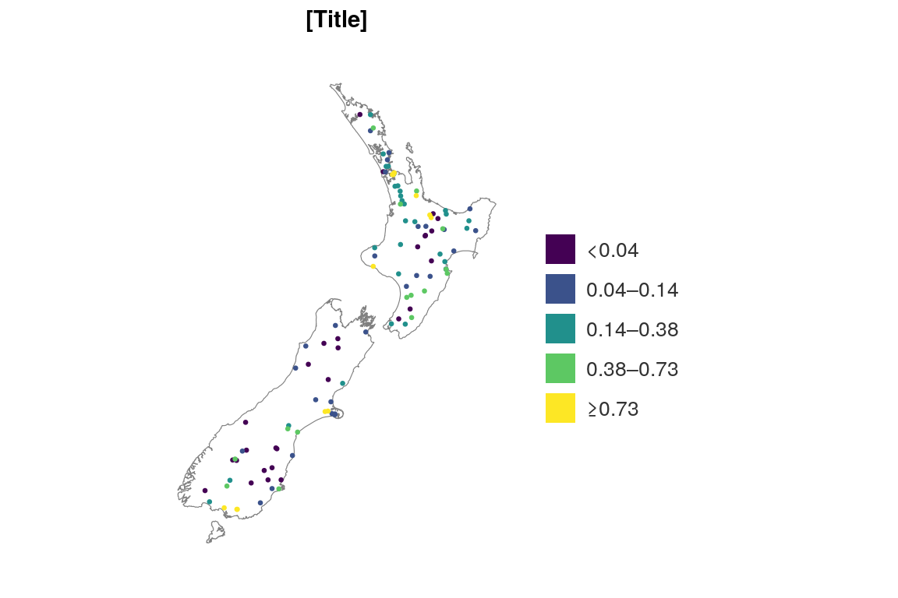
The bin method defaults to pretty breaks cut using the pretty algorithm. But you can customise it by providing a vector to the col_cuts argument from 0 to Inf (or from -Inf to Inf if the colour variable includes negative values).
ggplot_sf_col(example_sf_point, median, col_method = "bin", col_cuts = c(0, 0.25, 1, Inf), col_labels_dp = 2, boundary = nz)
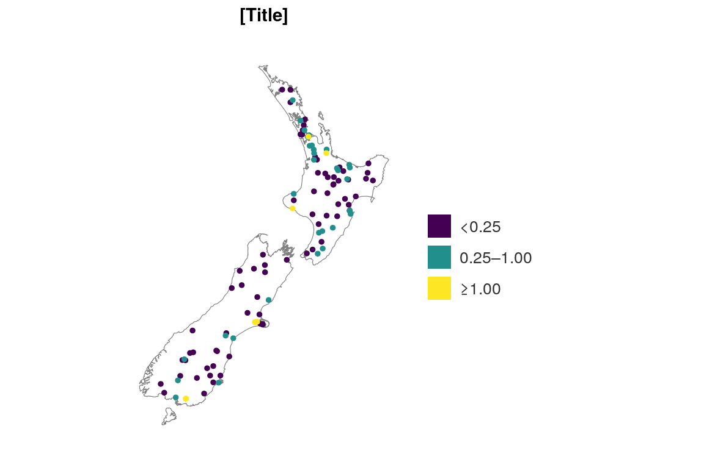
Faccetting works in a similar way to the plot functions. Note only one boundary can be added in. This may not work with all use cases.
ggplot_sf_facet(example_sf_point, facet_var = trend_category, boundary = nz)
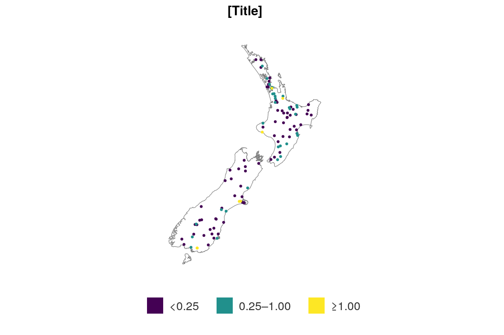
ggplot_sf_col_facet(example_sf_point, trend_category, trend_category, boundary = nz)
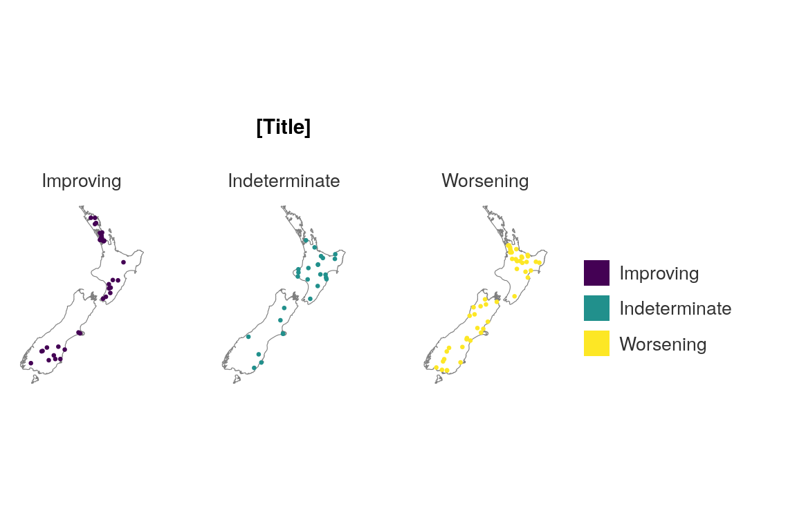
Polygons or line geometry types can also be used in these sf functions.
ggplot_sf(example_sf_polygon)
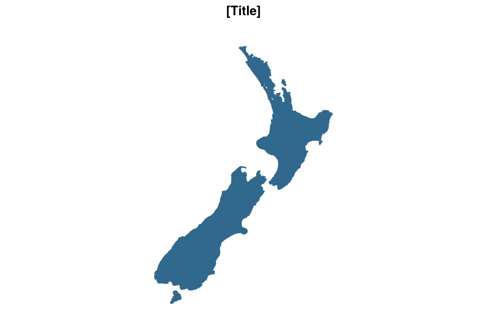
As a ggplot2 object is output, you can add ggplot2 layers to the simplevis function.
long <- 174.686565 lat <- -41.315595 wgtn <- tibble::tibble(long, lat) %>% sf::st_as_sf(coords = c("long", "lat"), crs = 4326) ggplot_sf_col(example_sf_point, trend_category, boundary = nz) + ggplot2::geom_sf(data = wgtn, size = 5, col = "red")
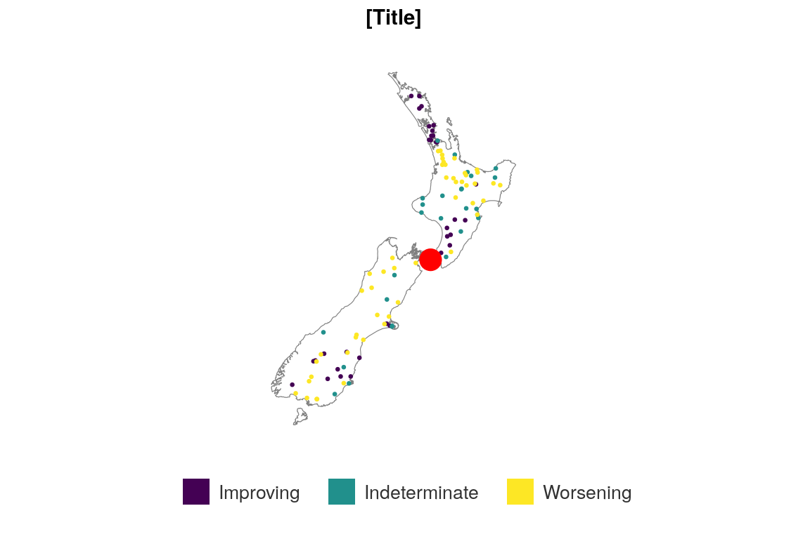
Make a non-facetted plot for a mobile device. Note the template shiny apps provide a function to detect what device the user is on and returns a TRUE or FALSE value that you can draw on with isMobile = input$isMobile within a shiny app.
ggplot_sf_col(example_sf_point, trend_category, boundary = nz, isMobile = TRUE)
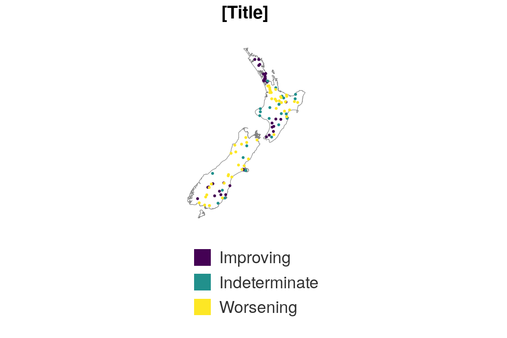
The leaflet functions work in a similar way to the ggplot2 wrapper functions.
leaflet_sf(example_sf_point)
Instead of a boundary argument, users have a basemap argument that defaults to “light” but has other options.
leaflet_sf(example_sf_point, basemap = "dark")
There is no facetting functionality provided for leaflet.
Some of the arguments are different between the leaflet and ggplot2 wrapper functions. This is because it has been opted to preserve the underlying arguments generally, so that users can add additional layers.
Note the default popups will wrap all variable names and values from the sf object.
pal <- c("#0D94A3", "#C4C4C7", "#AE4E51") leaflet_sf_col(example_sf_point, col_var = trend_category, pal = pal, title = "Site trends in New Zealand, 2021")
The rnaturalearth package is a great source of country and state boundaries.
sf <- rnaturalearth::ne_countries(scale = "medium", country = "Indonesia", returnclass = "sf") ggplot_sf(sf, alpha = 0, pal = "#232323")
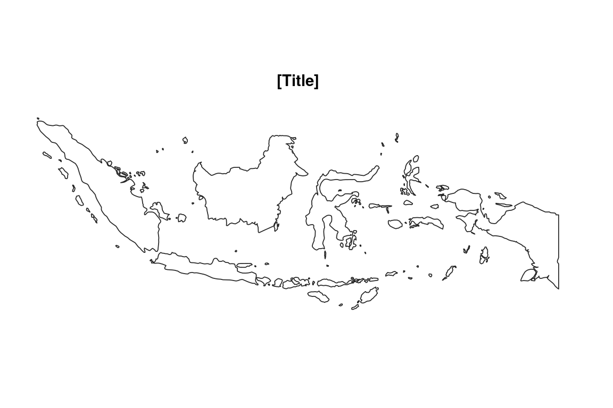
sf <- rnaturalearth::ne_states(country = "India", returnclass = "sf") ggplot_sf(sf, alpha = 0, pal = "#232323")
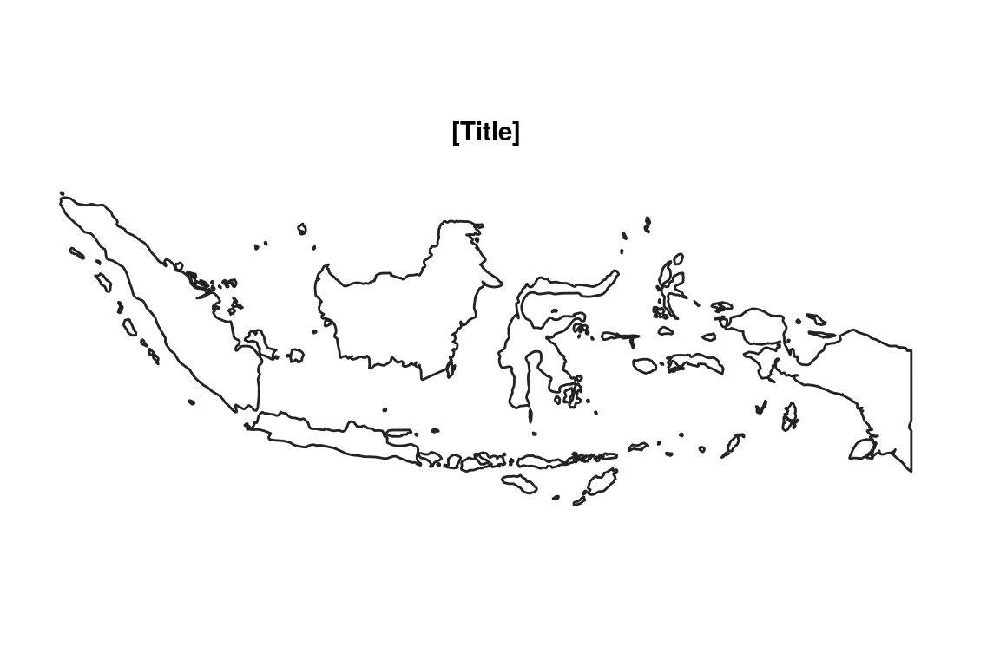
sf <- rnaturalearth::ne_states(country = "Australia", returnclass = "sf") %>% filter(.data$name == "Tasmania") ggplot_sf(sf, alpha = 0, pal = "#232323")
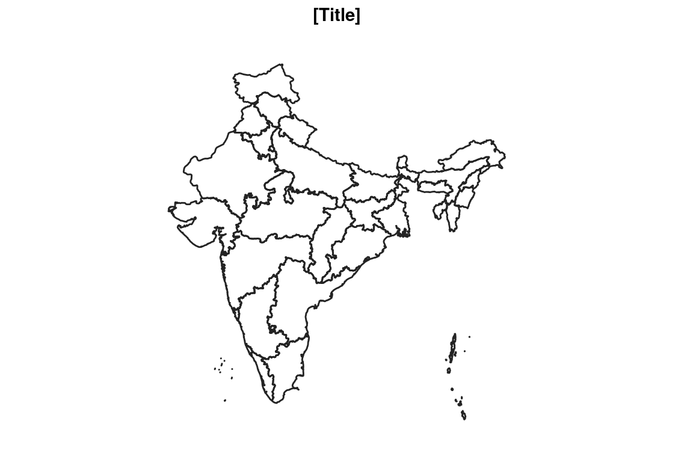
A leaflet basemap is available for use in shiny apps. It defaults to the top layer being “light”.
simplevis::leaflet_basemap()
You can set the bounds by adding a vector or bbox of bounds.
leaflet_basemap(bounds = c(166.70047,-34.45676, 178.52966,-47.06345))
Note if you are mapping across the dateline, use sf::st_shift_longitude.
sf <- rnaturalearth::ne_countries(scale = "large", country = "New Zealand", returnclass = "sf") ggplot_sf(sf)
ggplot_sf(sf::st_shift_longitude(sf))
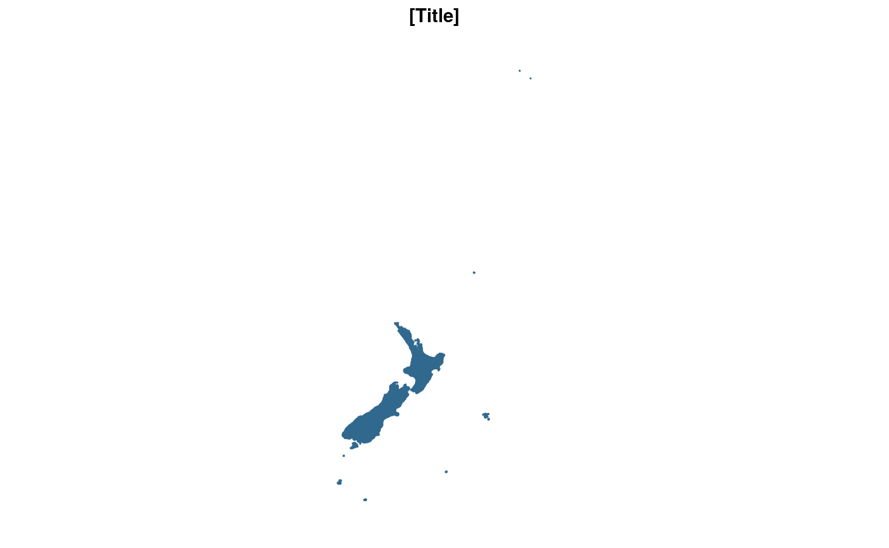
Shapesfiles can be read in using the sf::st_read function. Point vector data is often provided as a csv. In this situation, the data.frame can be read in using readr::read_csv by converting the data.frame to a sf object by identifying the x and y geometry column names and the Coordinate Reference System (CRS) epsg code that these relate to. For longs and lats, the CRS is 4326. There are multiple other CRS’ available (e.g. 2193 for the New Zealand Transverse Mercator). A small example shapefile is available for download at https://data.mfe.govt.nz/layer/53494-benthic-protection-areas-2016-report/data/.